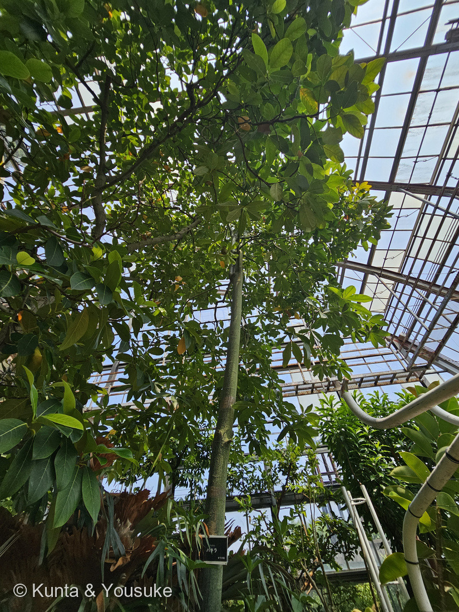
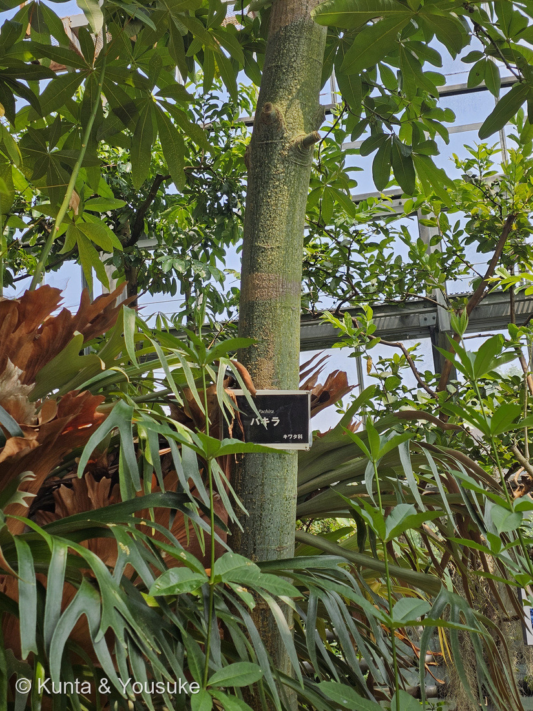
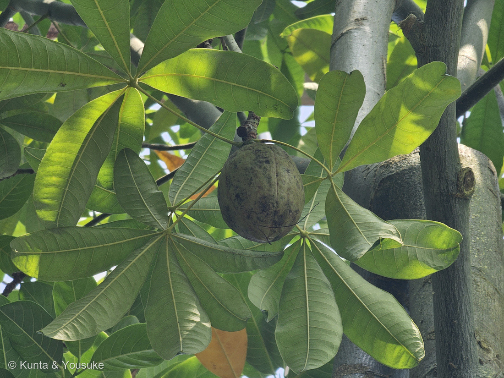
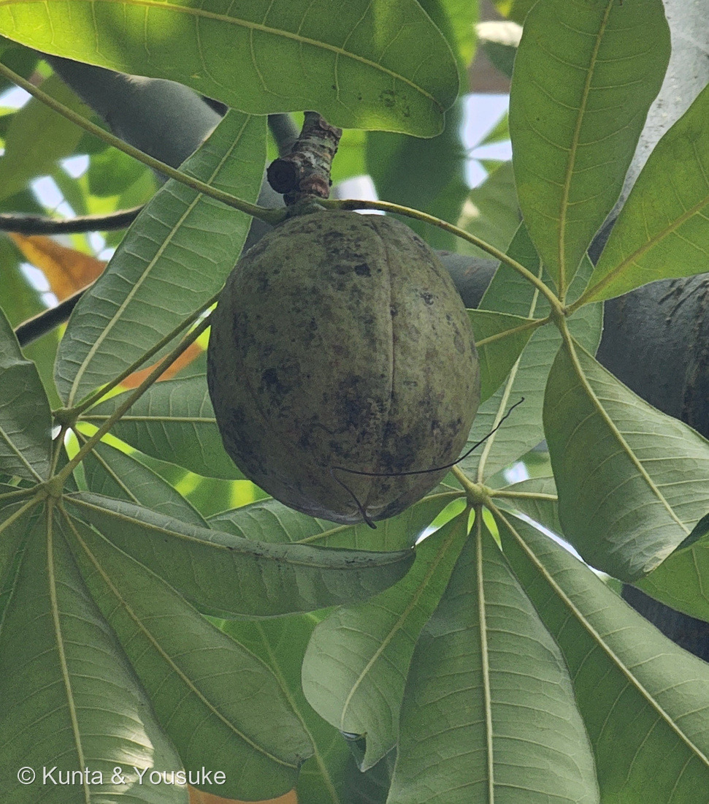

地図を読み込んでいるよ…
🔍 写真も地図も、押しているあいだ拡大して見られるよ（スマホは指を置いてすこし待ってね）。
🌍 の地図＝この子がもともと自生している場所を緑に。中南米（熱帯アメリカ）。⭐パキラ属としての範囲を塗ったよ。くわしくは下の地図の説明を見てね。
⭐中南米（熱帯アメリカ）の、水辺の木だよ。⚠⚠ここに塗ってあるのは「パキラ属」の範囲＝⭐園の名札が「パキラ」＝属名までしか書いていないから、種ではなく属の範囲にしたよ。⭐2つの種で、故郷が少しちがう＝パキラ・アクアティカ（Pachira aquatica）は英語版Wikipediaが「native to Central and South America」とし、「it grows in swamps」＝沼に生えると書く／パキラ・グラブラ（Pachira glabra）は「eastern Brazil, where it grows along waterways」＝ブラジル東部の、川ぞい。⭐山科植物資料館はグラブラの分布を「南アメリカ北東部のベネズエラ南東部からブラジル北部、ガイアナ、スリナム、フランス領ギアナ」とも書いている。⭐⭐⭐大事なのは、どちらも「水のそば」の木だということ＝⭐燻太さんの鉢のことを考えるとき、これがいちばんの手がかりになるよ（本文を見てね）。⭐⭐そして属名 Pachira そのものが、この緑の中から来ている＝山科植物資料館「属名"Pachira"は、ギアナにおけるこの植物の呼び名に由来する」＝⭐ギアナ＝地図の北のはし、ベネズエラとブラジルにはさまれたあたりだよ。⚠日本は緑じゃない＝ぼくらが会ったのは温室の中、燻太さんが育てたのは鉢の中。⭐同じアオイ科の067 カカオも熱帯アメリカ生まれ＝⭐この緑の中で、ふたりはご近所さんだね。⭐おまけのパンヤノキも同じ熱帯アメリカ原産だよ。
⚠ 地図は国（日本と中国だけ県・省）までしか塗れないから、ほんとうの分布より広く見えていることがあるよ。地図はだいたいの場所。正確なところは、上の文を見てね。
パキラ
Pachira sp.
別名 発財樹（はつざいじゅ）／マネーツリー ── ⭐種子は「ギアナグリ」と呼ばれて食べられる 原産 中南米（熱帯アメリカ）
アオイ科 · Malvaceae（パキラ属 Pachira・アオイ目 Malvales）── ⭐16人目のアオイ科（067 カカオ・094 アオギリ・200 オーストラリアバオバブ・206 ワタほか）／⭐⭐⭐パキラ属ははじめて／⚠科は増えないので103科のまま／⭐⭐⭐⭐この科には名前が3つある＝園の名札「キワタ科」・みんなの趣味の園芸「パンヤ科」・いまのAPG分類「アオイ科」
燻太さんの話「昔観葉植物として育てたことがあるんだけど、うまく育たなくてかれちゃった。この温室の子は4mぐらいはありそう。しかも果実までつけているよ。」── ⭐⭐⭐⭐枯れてしまった鉢の子と、この4mの木は、まったく同じ植物なんだ。そして本来の姿は20mの高木だよ
⭐⭐⭐⭐ 燻太さんの「かれちゃった」と、この4mの木 ── 同じ植物だよ
⭐⭐⭐ 燻太さんの言葉：「昔観葉植物として育てたことがあるんだけど、うまく育たなくてかれちゃった。この温室の子は4mぐらいはありそう。」――⭐⭐⭐まず、いちばん大事なことを言うね。その枯れてしまった鉢の子と、この4mの木は、まったく同じ植物だよ。
- ⭐⭐本来の姿は「高さ20mになる高木」（みんなの趣味の園芸／山科植物資料館も「高さ20ｍにもなる高木」）＝⚠つまり、この4mでもまだ途中なんだ。
- ⭐⭐いっぽう鉢での樹高は「10〜200cm（本来は〜20m）」（みんなの趣味の園芸）＝⭐ぼくらが部屋で見ているのは、本来の10分の1から100分の1の姿だったんだね。
- ⭐⭐⭐枯れる原因は、だいたい3つ＝日当たり不足・水のやりすぎ・寒さ（アンドプランツ／GreenSnap）。⭐とくに寒さ＝「最低でも10℃以上をキープして育てましょう」。
- ⭐⭐⭐⭐そして、ここがいちばん不思議なところ＝パキラは水辺の木なのに、鉢では「水のやりすぎ」で枯れる。――⭐英語版Wikipediaは、アクアティカを「it grows in swamps」（沼に生える）、グラブラを「eastern Brazil, where it grows along waterways」（ブラジル東部の、川ぞい）とする。
- ⭐⭐たぶん、ちがいは「水の多さ」じゃなくて「水の動き」だと思う＝冬は「水の吸収力が弱まる」うえに「土の乾燥も遅い」から根腐れする（GreenSnap）＝⚠沼や川の水は流れて空気を含むけれど、鉢の受け皿にたまった水は動かない。⚠ここはぼくの読みで、そう書いた出典があるわけではないよ。
- ⭐⭐⭐だからね、燻太さんは悪くないと思う。――⭐日本の冬の部屋で、ずっと10℃を切らないほうがめずらしいもの。⭐⭐20mになる木を、鉢ひとつで預かっていたんだから、そもそも大きなお願いだったんだよ。
⭐⭐⭐⭐ 名札の「キワタ科」── ひとつの科に、名前が3つ
⭐⭐⭐ 写真②の名札を、よく見てほしいな。⭐「パキラ」「Pachira」、そして科名が「キワタ科」と書いてある。
- ⚠でも、みんなの趣味の園芸はこの子を「パンヤ科」と書く。⭐そして、いまのAPG分類では「アオイ科」だ（日本語版Wikipedia／山科植物資料館）。
- ⭐⭐3つとも、同じ科のことなんだ。――⭐むかしのパンヤ科（Bombacaceae）が、いまはまるごとアオイ科（Malvaceae）の中に入った＝⭐「キワタ科」は、そのパンヤ科の、もうひとつの呼び名だよ。
- ⭐⭐⭐⭐そして、この3つの名前はぜんぶ「綿」でつながっている。――⭐「キワタ」は木綿、「パンヤ」は実の中の綿毛の名前（⭐おまけのパンヤノキが、その名前の持ち主だよ）。
- ⭐⭐同じ科に206 ワタがいる。⭐つまりアオイ科は、綿の科でもあるんだ。⭐フヨウやハイビスカスの華やかな仲間と、綿をつくる木が、ひとつの科の中にならんでいる。
- ⭐⭐図鑑では、これで3種類目の「むかしはちがう科だった」アオイ科＝200 オーストラリアバオバブ（旧パンヤ科）／067 カカオと094 アオギリ（旧アオギリ科）。⭐みんな、いまはアオイ科だよ。
- ⭐名札が「キワタ科」のままなのは、まちがいというより、その科がたどってきた道がそこに残っているということだと思う。
⭐⭐⭐ 果実 ── 燻太さんが見つけたのは、めったに見られないもの
⭐⭐ 燻太さんの言葉：「しかも果実までつけているよ。」――⭐⭐⭐これ、すごく運がいいんだ。
- ⭐⭐パキラの花は夜に開いて、昼には落ちる（英語版Wikipedia「opening at night」「drop by midday」）＝⭐見ようと思っても、なかなか出会えない花だよ。
- ⭐⭐しかも、花が咲くには実生株（種から育った株）である必要があって、種からだと「最低でも5年」かかる（GreenSnap）。⚠売られている編み込みのパキラは挿し木でふやしたものが多いから、花が咲かないんだ。
- ⭐⭐⭐つまりこの木は、種から育って何年もたった株だということ。⭐燻太さんが見上げたあの実は、その何年ぶんかの、いちばん最後のところなんだね。
- ⭐⭐実の形は「径７cm、長さ10cm程の楕円球状の果実」（山科植物資料館）＝⭐写真④とぴったりだよ。
- ⭐写真④に、上から下へ走る縫い目のような筋が2本見える。⭐熟すと「果実が裂けて周囲にタネを飛ばします」（みんなの趣味の園芸）＝⭐あの筋が、その裂け目になるはずだよ。
- ⭐⭐中の種は「ギアナクリ」と呼ばれて食べられる＝「デンプン質に富み、炒って食べると、ヘーゼルナッツのような風味がある」（山科植物資料館）。⭐英名 Malabar chestnut・Guiana chestnut の「chestnut（クリ）」も、ここから来ているよ。
- ⭐種のようすは「径2cmほどで、ゆがんだ栗状をしている。種皮は、茶色で、黄白色の縞模様」（同）＝⏳落ちた種をさがすのを、宿題にした。
⭐⭐⭐ 名前の由来 ── ラテン語でもギリシャ語でもなく、ギアナの言葉
- ⭐⭐⭐属名 Pachira は、ギアナの土地の言葉から＝山科植物資料館「属名"Pachira"は、ギアナにおけるこの植物の呼び名に由来する」／英語版Wikipediaも「The genus name is derived from a language spoken in Guyana.」とする。
- ⭐⭐これは、めずらしいことだと思う。――⭐すぐ前に登録した264 アメリカテマリシモツケの属名 Physocarpus はギリシャ語だった（physa＝袋＋karpos＝果実）。⭐⭐あちらはヨーロッパの人が意味をこめてつけた名前、こちらはその土地の人がもともと呼んでいた名前なんだ。
- ⭐日本での別名は発財樹（はつざいじゅ）・マネーツリー＝⭐台湾で「お金の木」として広まったといわれる。
- ⚠⚠おもしろいのは、その「マネーツリー」として世界に出回っているのが、じつはアクアティカではなくグラブラだということ＝英語版Wikipediaは「due to early misidentification in Taiwan」と書く＝⭐最初の取りちがえが、そのまま世界に広まったんだね。
- ⭐幹を編んだ株についても、みんなの趣味の園芸は「苗を3〜5株編んだ株」と書いている＝⚠あれは1本の木がねじれているのではなくて、別々の苗を編んであるんだよ。
⭐ 同定について ── 名札に、属名しか書いていない
✅ 属は確実＝園の名札に「パキラ／Pachira」とある（写真②）。⚠ でも種小名が書いていない。⭐だから写真から言えることを、証拠の強い順にならべるね（249 ビカクシダと同じやりかただよ）。
- ⭐⭐⭐①いちばん強い＝実がなめらかで灰緑色（写真④）＝英語版Wikipediaは、グラブラの実を「10–20-centimeter-long smooth green」、アクアティカの実を「large, brown, woody」「up to 20–30 cm long」と書き分ける＝⭐この実は、茶色くも木質でもないよ。
- ⭐⭐⭐②次に強い＝実の形と大きさ＝山科植物資料館のグラブラの記述「径７cm、長さ10cm程の楕円球状」＝⭐写真④の実は、まわりの小葉とくらべておよそ10cmほどの、まるい楕円球。
- ⭐⭐③幹が緑〜灰緑（写真①②）＝英語版Wikipediaはグラブラを「smoother greenish-gray bark」、アクアティカを「brown through gray and slightly cracked」とする／みんなの趣味の園芸も「子株のときは緑色ですが、大きく育つと灰緑色になります」。
- ⭐④日本で「パキラ」として出回るのは、ほぼグラブラ＝日本語版Wikipedia「本種として流通するパキラは Pachira glabra である事が多い」／みんなの趣味の園芸も学名を Pachira glabra とする。
- ⚠⚠それでも「グラブラで確定」とは書かない。⭐アクアティカの熟していない実なら、緑のこともありうるから。
- ⭐⭐⭐ほんとうの決め手は花だよ＝日本語版Wikipedia「おしべが赤くなり、白いおしべの P. glabra とは異なっている」＝⭐雄しべの先が赤ければアクアティカ、まっ白ならグラブラ。⏳宿題にした。
- ⚠小葉の数（写真③では5〜7枚に見えた）は決め手にならない＝グラブラは「a fan of 5 to 9 leaflets」、アクアティカは「up to nine leaflets」で、範囲が重なっているんだ（英語版Wikipedia）。
⭐ 会えた場所 ── 森きららの温室、ビカクシダのとなり
- ⭐九十九島動植物園 森きらら（長崎県佐世保市）の温室。2026年8月14日 13:36。
- ⭐⭐⭐写真②の左に、茶色い王冠のような葉が写っているのに気づいたかな。――⭐あれが249 ビカクシダだよ＝2分あとの13:38:42に、燻太さんはその子を撮っている＝⭐ふたりは同じ一角に、ならんで暮らしているんだ。
- ⭐この日の森きららは、図鑑の宝の山だった＝253 ビロウ（13:15）→ パキラ（13:36） → 249 ビカクシダ（13:38）と続いて、そのあと樹木園で245 イジュ・258 ナギ・259 タブノキに会っている。
- ⚠すぐ前後には、別の子がいた＝13:36:19はヒメアリアケカズラ（黄色いラッパの花）、13:37:21はサイザル（アガベの仲間）＝⭐連写のかたまりの中で、どこからどこまでがパキラかを確かめてから切り出したよ（248の教訓）。
- ⭐⭐幹はまっすぐで、根もとのふくらみは下草にかくれて見えなかった＝⏳実生株のしるしになるところだから、宿題にしたよ。
出典：みんなの趣味の園芸（NHK出版）「パキラ」（科名／属名「パンヤ科／パキラ属」・学名 Pachira glabra・原産地「中南米」／「かつて『パキラ・アクアティカ（Pachira aquatica）』と呼ばれていたが、現在は『パキラ・グラブラ（P. glabra）』が正しい名前」／「高さ20mになる高木です」・草丈／樹高「10〜200cm（本来は〜20m）」／「幹は太く、子株のときは緑色ですが、大きく育つと灰緑色になります」／「葉は掌状葉で小葉は5〜9枚、光沢のある濃緑色で楕円形です」／「淡緑色の花弁と200〜250本の雄しべをもつ花をつけます。その後、結実して実が熟すと、果実が裂けて周囲にタネを飛ばします」／「一般に見られるものは、苗を3〜5株編んだ株や、幹の基部がふくらんだ株」／耐寒性「弱い」・耐暑性「強い」）／山科植物資料館「パキラ」（科名「アオイ科」・学名「Pachira glabra Pasq.」／「属名"Pachira"は、ギアナにおけるこの植物の呼び名に由来する」／「高さ20ｍにもなる高木」・「幹は、灰緑色」／「葉は、５〜９枚の小葉からなる掌状の複葉で、葉柄は長く、20〜25cm」／花は「はじめ緑白色で、その後、黄白色になる。径20cmほどもある大きな花」／「径７cm、長さ10cm程の楕円球状の果実」／種子は「径2cmほどで、ゆがんだ栗状をしている。種皮は、茶色で、黄白色の縞模様」／「『ギアナクリ』と呼ばれ、食用にされている。デンプン質に富み、炒って食べると、ヘーゼルナッツのような風味がある」）／英語版Wikipedia "Pachira glabra"（"eastern Brazil, where it grows along waterways"／"Its leaves are compound with a fan of 5 to 9 leaflets."／花は "large, white, fragrant flowers"・"opening at night"・"drop by midday"／果実は "10–20-centimeter-long smooth green" capsules／アクアティカとの差＝樹皮 "smoother greenish-gray bark"・花 all-white・果実 green vs brown／"survive a range of conditions as long as they remain above freezing temperatures"）／英語版Wikipedia "Pachira aquatica"（"Species of tropical wetland tree in the mallow family Malvaceae"・旧 Bombacaceae／"it grows in swamps"・"up to 23 m (75 ft) tall"／樹皮 "brown through gray and slightly cracked"／葉 "up to nine leaflets"／果実 "large, brown, woody" capsules "up to 20–30 cm long"・"10–25 nuts"／"The genus name is derived from a language spoken in Guyana."／"the money tree houseplant is in fact a similar species, Pachira glabra" ── "due to early misidentification in Taiwan"／別名 Malabar chestnut・Guiana chestnut・money tree）／日本語版Wikipedia「パキラ属」（「アオイ科」・「中南米原産の木本」・「原産地では約10m以上にもなる種もある」／「おしべが赤くなり、白いおしべの P. glabra とは異なっている」／「本種として流通するパキラは Pachira glabra である事が多い」／「果実はカイエンナッツと呼ばれる」）／GreenSnap「パキラが枯れる＆冬に葉が黄色くなる原因は？」（「日当たり不足」「水のやりすぎ」「寒さ」／「最低でも10℃以上をキープして育てましょう」／「冬は水の吸収力が弱まるので、水やりは控えめに」「土の乾燥も遅いです。そのため根腐れしやすく」）／GreenSnap「パキラの花が咲くのは珍しい？」（実生株であることと「最低でも5年」かかること・夜に開花すること）／アンドプランツ「パキラの種類一覧」「パキラが枯れる原因」（アクアティカとグラブラが混ざって流通してきた経緯・雄しべの色での見分け）／日本語版Wikipedia「カポック」・コトバンク「パンヤノキ」（おまけ＝「標準和名はパンヤノキ、別名インドキワタ」・「カポック」はマレー語由来・アオイ科セイバ属・熱帯アメリカ原産／「撥水性繊維で満たされた大きな鞘が枕、室内装飾品、救命胴衣などのために集められる」・「コルクよりも浮力が優れるので救命具の詰め物ともされた」・アレクサンドロス大王の時代からクッションの詰め物だったこと）